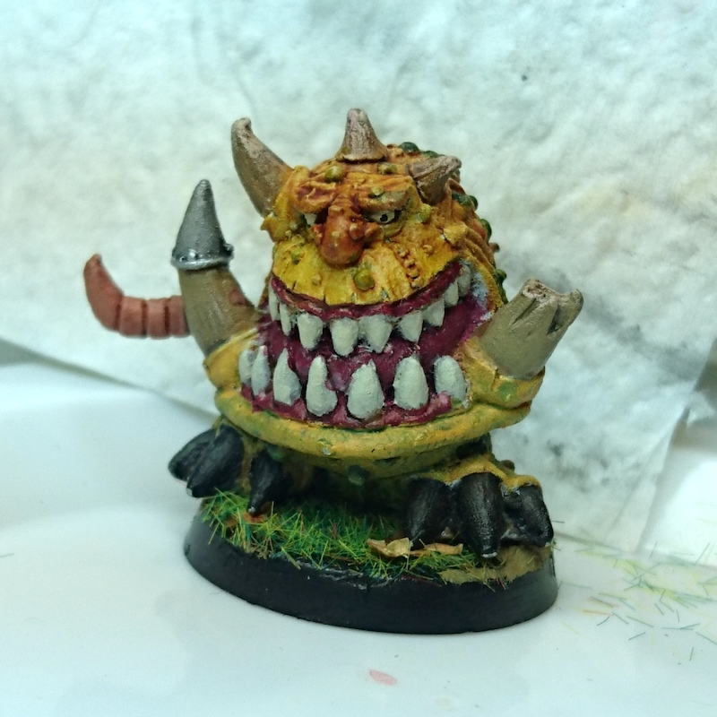

Orktober 2018: I tried
But did not get all 15 Orruk Ardboys painted this month, I did finish the mighty Squigg though! 
The Ardboys "just" need some yellow layering for the armor and highlighting, shading and highlighting the shoulders and blue bits and same for the skulls. And of course basing. I'm going to base them the same as the Squigg, I like the autumn grass + leaves and the combination of the yellow and green.